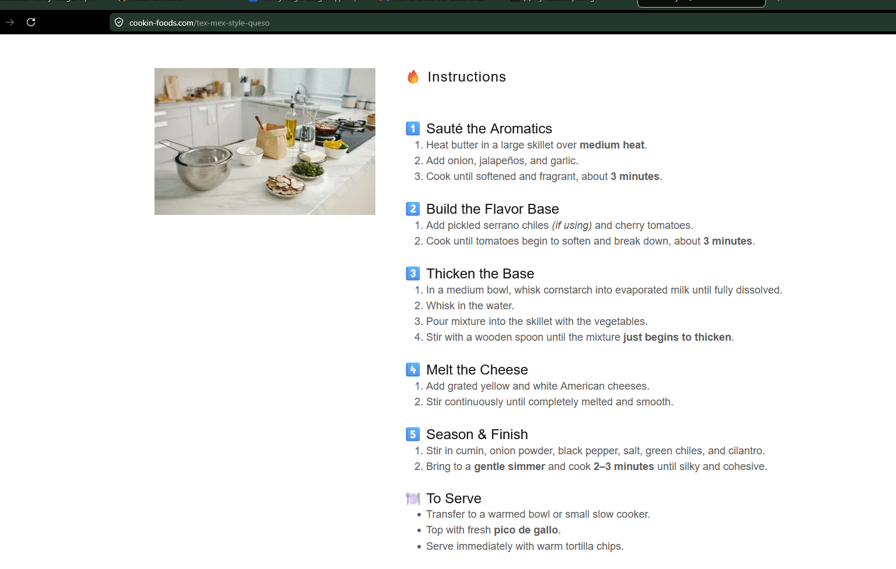

Appetizers
Tex-Mex Style Queso
A silky Tex-Mex queso with jalapeños, tomatoes, American cheese, and warm spices.
Ingredients
Aromatics
- 2 tbsp unsalted butter
- ½ medium onion, chopped
- 2 fresh jalapeños, seeded and chopped
- 3 garlic cloves, minced
- 1 tbsp pickled serrano chiles, optional
- 1 cup cherry tomatoes, halved
Base
- 1 (13 oz) can evaporated milk
- 2 tbsp cornstarch
- 1 cup water
- ½ lb yellow American cheese, grated
- ½ lb white American cheese, grated
Seasoning
- 1 tsp ground cumin
- ¼ tsp onion powder
- ¼ tsp freshly ground black pepper
- ½ tsp kosher salt
- 1 (4.5 oz) can green chiles
- 1 tbsp fresh cilantro, chopped
For Serving
- Pico de gallo
- Tortilla chips
Instructions
1
Sauté the aromatics
Melt butter in a large skillet over medium heat. Add onion, jalapeños, and garlic. Cook until softened and fragrant, about 3 minutes.
2
Build the flavor base
Add pickled serrano chiles if using and cherry tomatoes. Cook until tomatoes begin to soften and break down, about 3 minutes.
3
Thicken the base
Whisk cornstarch into evaporated milk until fully dissolved. Whisk in water, pour into the skillet, and stir until the mixture just begins to thicken.
4
Melt the cheese
Add grated cheeses and stir continuously until completely melted and smooth.
5
Season and serve
Stir in cumin, onion powder, black pepper, salt, green chiles, and cilantro. Serve warm with pico de gallo and tortilla chips.
Notes
- Removing jalapeño seeds and ribs significantly reduces heat.